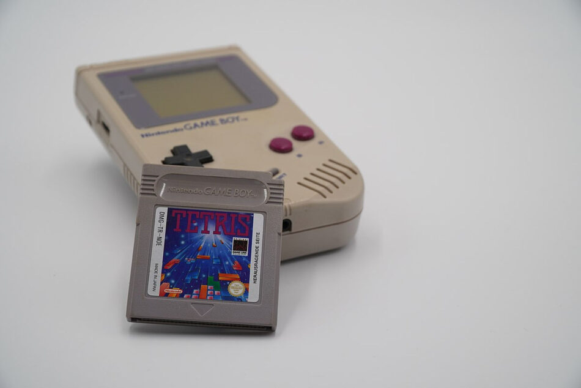

Tetris um dos jogos mais famosos do mundo
O jogo TETRIS consiste em empilhar tetraminós que descem a tela de forma que completem linhas horizontais. Quando uma linha se forma, ela se desintegra, as camadas superiores descem, e o jogador ganha pontos. Quando a pilha de peças chega ao topo da tela, a partida se encerra.
Historia do Tetris
Um clássico dos jogos de videogame, o tetris foi resultado do esforço de um matemático russo chamado 🔗Alexey Pajintov. Em meados de 1984, esse estudioso teve grande interesse em estudar os pentaminós desenvolvidos, trinta anos antes, pelo matemático norte-americano 🔗Solomon Golomb. Em suma, os pentaminós seriam peças formadas por cinco quadrados que poderiam suportar doze formas de disposição distintas.
Por meio desse jogo, poderiam ser feitos exercícios que empregavam princípios diversos do raciocínio lógico e matemático.Ampliando a sua aplicabilidade no meio acadêmico, a criação de Golomb foi de grande contribuição para que significativas descobertas no campo da análise combinatória fossem desenvolvidas. Contudo, ao invés de buscar algo mais complexo com o jogo, o matemático 🔗Alexey Pajintov resolveu simplificar o esquema trabalhando com peças formadas por quatro quadrados.
Em 1985, eles desenvolveram a versão colorida, e Pajinov passou para os amigos fora do trabalho, que por sua vez a copiaram para outros amigos. Tetris “se espalhou como fogo na floresta” por toda a União Soviética e os países do bloco. Ele circulava livremente, copiado de disquete para disquete, já que a noção de direito de propriedade intelectual não existia. “Não sabíamos que o software poderia ser considerado um produto protegido. A ideia de conseguir dinheiro pelo programa parecia muito estranha e ridícula para nós.”
Como a Guerra Fria se relacionou com o jogo
A Guerra Fria ainda estava em andamento. Gorbachev ainda não estava no poder, e o mundo não tinha ouvido falar da 🔗Perestroika. As ideias individuais eram propriedade do Estado, para serem partilhadas entre todos os que estavam daquele lado da Cortina de Ferro.
A partir desse momento, estava sendo criado o popular jogo “tetris”, que leva o nome justamente pela quantidade de quadrados que moldam o formato das peças.
Já nessa época, os soviéticos transformaram a descoberta em um divertido jogo de tabuleiro popular em várias regiões do bloco socialista. Ao chegar em terras búlgaras, a novidade caiu nas mãos de um do empresário húngaro 🔗Robert Stein, que descobriu o jogo em 1986 e tentou garantir os direitos do jogo de computador para a empresa dele, a 🔗Andromeda Software, entrando em contato com o Centro de Computação, em Moscou.
Ninguém estava muito interessado em atendê-lo: no local onde foi calculada a trajetória dos satélites 🔗Sputnik, eles estavam ocupados resolvendo equações físicas e não tinham tempo para jogos. Pajinov acabou lidando com os pedidos de Stein, e quando o empresário propôs um adiantamento de US$ 12 mil, ele respondeu que estavam interessados e dispostos a negociar.
Stein ofereceu sua nova aquisição à Mirrorsoft, braço de software da britânica 🔗Maxwell Corporation que, em 1986, era um gigantesco império do entretenimento, dono de jornais, revistas e até clubes de futebol. Como aconteceu em tantos lugares da União Soviética, assim que o Tetris foi instalado, os técnicos da Mirrorsoft não paravam de jogar.
Assim, enquanto assinava um acordo para produzir o jogo no Reino Unido, Maxwell encarregou a 🔗Spectrum HoloByte, sua empresa de software na Califórnia, de abrir caminho para a invasão do Tetris nos Estados Unidos. A inspiração para a campanha de marketing foi a entrada em cena de Gorbachev, que havia despertado um fascínio por aquele território atrás da Cortina de Ferro: toda a arte era russa, até o nome do jogo. Tudo corria bem, mas o alarde feito para o lançamento iminente de Tetris ressoou em Moscou.
Crescimento financeiro
O holandês 🔗Henk Rogers, era um empresário que se dedicava a encontrar os melhores jogos para produzir para o mercado japonês. Ele se apaixonou por Tetris no Las Vegas Consumer Electronics Show de 1988, garantiu os direitos do computador pessoal e do videogame para o Japão e voltou para casa para criar suas próprias versões. 🔗Nikolai Belikov, diretor do Elorg, resolveu investigar — e começou examinando o acordo com a empresa de Stein.

Enquanto isso, a gigante da indústria Nintendo, arquirrival da Atari, estava prestes a lançar um console portátil, o Game Boy. Eles queriam incluir o Tetris como parte do pacote, então precisavam de alguém para garantir discretamente os direitos para eles — e Rogers parecia a pessoa ideal. Que tentou falar com Stein, mas não deu certo.
Uma reunião marcada que, segundo Rogers, contou com a presença de cerca de 10 pessoas, entre agentes da KGB, empresários, advogados e Pajitnov, que o interrogaram durante duas horas. A primeira coisa que Berlikov fez foi deixar claro que os direitos que ele havia obtido para vender Tetris foram concedidos por alguém que não os detinha.
Isso fez a Atari, confiante de que a Mirrorsoft tinha os direitos do console, continuava investindo na fabricação e no marketing, com meio milhão pronto para o dia do lançamento, festa para a imprensa e anúncios nos jornais, Rogers chegou à 🔗Nintendo não apenas com os direitos para o Game Boy, mas com a oferta de direitos exclusivos para consoles.

No ano de 1988, o Tetris foi a mais nova aposta da empresa de videogames Nintendo. Já nos seus primeiros meses, o mercado nipônico absorveu três milhões de exemplares do jogo. E esse era apenas o começo de outras cifras estrondosas. Desde o início do mercado de jogos para celular, estima-se que o tetris fora baixado mais de 80 milhões de vezes. E, antes disso, milhares de videogames portáteis da marca Game Boy foram consumidos graças ao mesmo joguinho tentador.